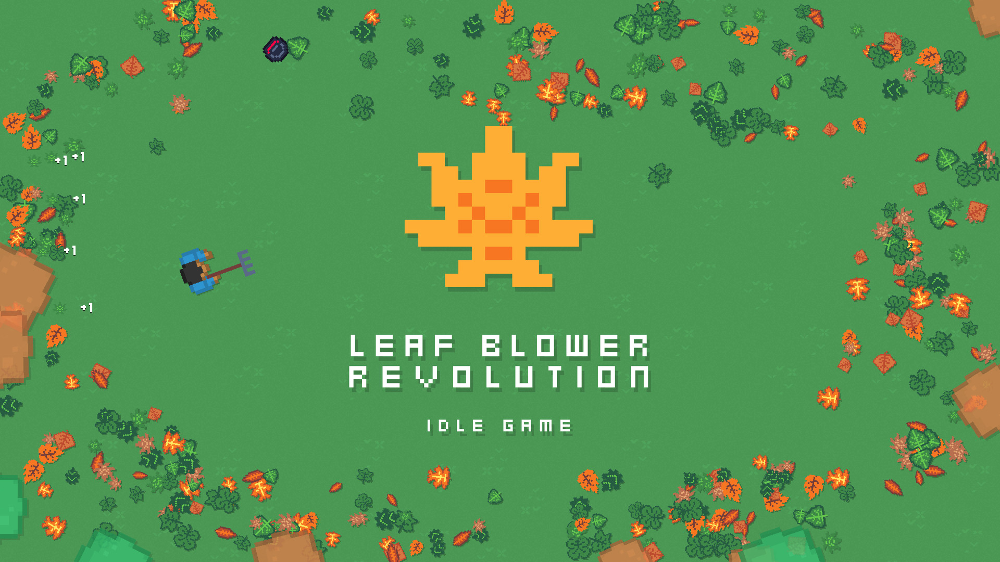

Cookie Clicker

Cookie Clicker is one of the most famous idle games where you literally just click cookies to unlock upgrades that make more cookies.
A Dark Room

A Dark Room begins as a simple text-based idle game that slowly turns into a deep survival with and exploration aspect to it.
Leaf Blower Revolution

Leaf Blower Revolution is an incremental type of game where you have to clear leaves and unlock upgrades to progress faster.
Fallout Shelter

Fallout Shelter is an idle management game where players build and maintain a vault, manage their resources, and keep their residents happy!